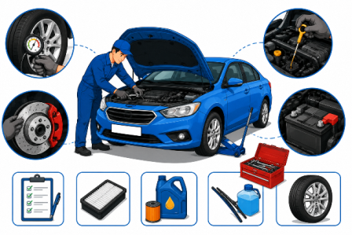

Mechanical failures cause a significant proportion of road accidents. Regular inspection and maintenance of brakes, lights, and steering is not optional — it is a safety obligation.
Brake system
Inspect brake pads, discs, and fluid regularly. Spongy brakes or increased stopping distance are danger signs.
Lights & indicators
All headlights, taillights, brake lights, and indicators must function correctly — checked monthly.
Steering & suspension
Play in the steering wheel or unusual tyre wear indicates alignment or suspension problems.
Fluid levels
Engine oil, coolant, brake fluid, and power steering fluid — check all before long journeys.
Wipers & windscreen
Worn wipers in rain can reduce visibility to near-zero. Replace every 12 months minimum.
Annual fitness certificate
All vehicles, especially commercial ones, must undergo mandatory roadworthiness inspection annually.